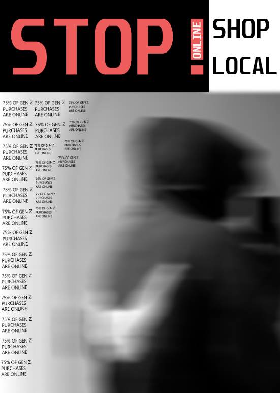
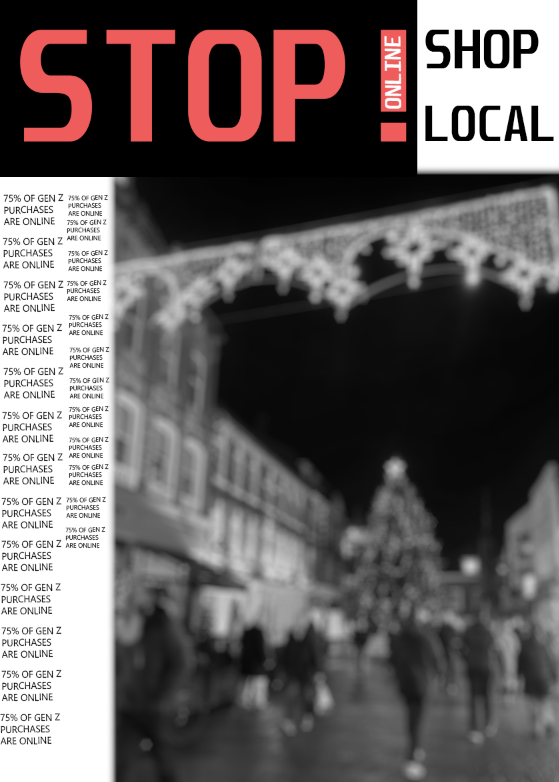

First Semester
Tasks/Exercises
- Sketching around the campus
- Climate awareness poster
- A design using colour
- Digital art in the style of an artist
- A kinetic typography
- My ISTD project
- 3D animated logo
I have been assigned the task of producing different sketches around my campus and the city of Winchester.
This task showcases my artistic drawing capabilities on a digital piece of software as a sketch.
For my poster was to raise awareness about the environmental impact of diesel on our aquatic ecosystem.
For my colour project I was tasked with creating a piece of art that uses colour to convey a message.
The digital art was inspired by the artist Tomoo Gokita he creates pieces that are abstract art, this piece was inspired by the great Circus.
 ISTD project I chose the brief of “death of the centre” what this means is that local shops and communities.
This was a piece of moving text animated in photoshop to move around a triangle it portrays movement.
This was a simple logo animated in adobe after effects and effectivly will loop endlessly.
Group Game project
This is my game group project we worked in teams to create out piece i worked on concept art and design and its all under here!
These are basic thumbnails of boss ideas i came up with before the group came to a conclusion of what boss elements they wanted. Theres also a quick drawing of a fast travel idea i came up with.


These are my final boss designs i chose the slime to get recolored and rendered properly. I came up with different mechanics for each boss which i presentedin class


Group projects
Sustaniabilty Tech


this is my development of the logo i did for the group project on sustainablity, and my group project was based on smart fridges and my job was to develop and make the logo i asked the group for advice and looked for apporval from all members and they all agreed on my final design
VR learning game


in this group project i was tasked with designing the UI in the beginning however the group broke apart so i only have the ui that i was designed and showed once
Brand deconstruction


My logo